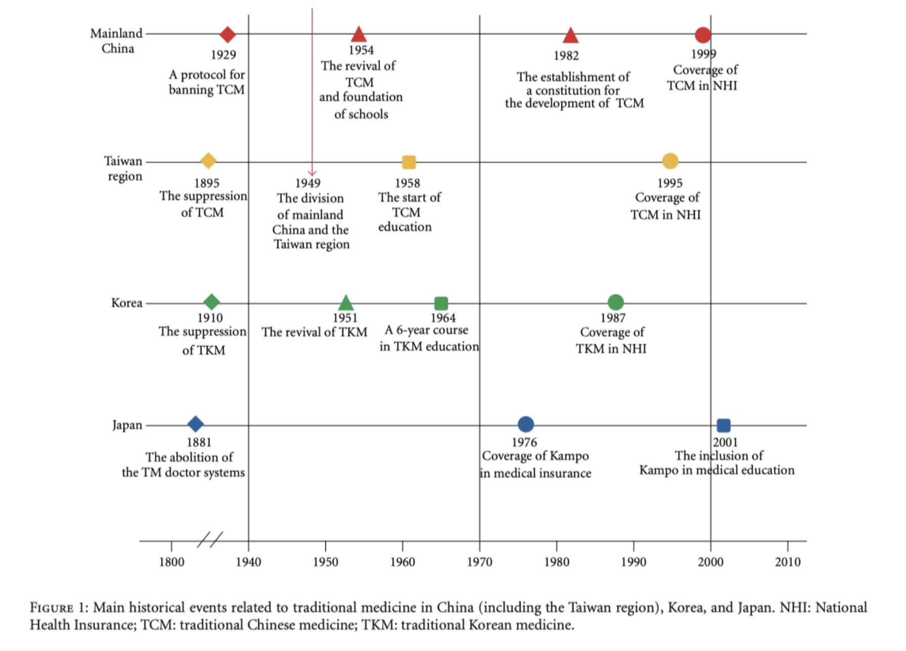

The Formation of TCM in Modern China
The Abolition and Revival of Traditional Medicine in East Asian Countries
In the early 20th century, a significant shift occurred across East Asia as countries like Korea, China, Japan, and Taiwan moved to abolish traditional medicine. However, this was followed by a unique revival in the mid-20th century, with each nation taking a distinct path.
Japan
After the abolition of traditional medicine in Japan, Japanese physicians began to recognize the value of their traditional medical practices and advocated for its application to patients. In 1915, modern physician Wada Keijūrō (和田啓十郞) published Ikai no Tetsui (醫界之鐵椎). In this book, he compared Kampo medicine to Western medicine and called for its revival. Wada became a symbolic figure in Japan’s movement to revive traditional medicine. Thanks to the advocacy of such physicians, most Japanese doctors today use traditional medicine on a regular basis, although Japan does not have a dual healthcare system like Korea, China, and Taiwan.
Korea
In Korea, Western physicians also played a role in promoting the revival of traditional medicine. Bang Hab-shin (方合信), a graduate of Severance Medical School in 1916, advocated for the efficacy of TCM in treating patients. He argued that TCM was superior to Western medicine in certain treatments, particularly for internal diseases requiring pharmacological therapy. He emphasized the need to scientifically study and further revive traditional medicine. The emergence of advocates for TCM from within the Western medical community held significant implications, as their interest in TCM stemmed from reflections on the limitations of Western medicine.
China
In China, the revival of traditional medicine was approached from a unique perspective, initiated by the Communist government. The traditional Chinese medicine (TCM) system was formally established as part of this effort.
The process in China is explored in detail in the book Chinese Medicine in Early Communist China, 1945-1963: A Medicine of Revolution by Kim Taylor, a scholar from the Joseph Needham Institute, who spent several years in China conducting research.
The book provides a summary of how Chinese medicine transformed from a marginalized and sidelined practice in the early 20th century into a central and highly visible component of the national healthcare system under the Chinese Communist Party. It examines the political, economic, and social factors that drove this promotion and highlights the pivotal role Chinese medicine was intended to play in Mao Zedong’s revolutionary vision.
"Modern traditional Chinese medicine(TCM) is a distillation of ancient concepts that have been systematically developed... TCM is the name of the medicine promoted by the Chinese Communist Party as a state-led medicine... The institutionalization and standardization of traditional Chinese medicine define the characteristics of Communist China's traditional medicine, and therefore, the 'TCM' that we refer to today only functions within these established factors."
— from "Chinese Medicine in Early Communist China, 1945-1963: A Medicine of Revolution"
The above passage is a retranslation into English of the preface from her book, which had been translated into Korean. The author traces the essence or origin of TCM from a historical perspective in her book. The book's important premise is that modern TCM is not a continuous tradition inherited from the past but rather a deliberate distillation of ancient concepts according to the state's directives in the 20th century. In particular, she believes that this manipulation began in the early years of the Chinese Communist Party's reign (1945-64). The author argues that if there had been no deliberate manipulation by the Chinese Communist Party, TCM would have existed very differently from today. It is a well-known fact that healthcare systems have evolved in line with changing societal demands throughout history, regardless of country. However, what is unique about China is that it was established based on Mao Zedong's strong anti-western scientific power.
Birth of "Traditional Chinese Medicine"
The period between 1953 and 1956 marked a significant time for the institutionalization of Traditional Chinese Medicine (TCM). During this time, the Chinese Communist Party officially institutionalized Chinese medicine by establishing four TCM schools following the reintroduction of Mao's revolutionary plans for Chinese medicine. In the West, it is commonly referred to as TCM, but within China, it is simply called "中医 (Zhongyi)," which translates to "Chinese medicine" without the "traditional" designation. Initially, what Mao planned was a medical system distinct from Western medicine. It was proudly named "Chinese medicine (中医)"—neither traditional nor modern medicine in the conventional sense. Therefore, the term "Chinese medicine" (中医) used during this period differs from the concept of TCM as we understand it today. However, as Mao's plans eventually failed, "中医(Chinese medicine)" came to signify traditional medicine, and when introduced to the West, the term "traditional" was added, resulting in what we now call TCM.
The Shift in Terminology: CM → TCM
Chinese Medicine
(中医 - Zhongyi)
Traditional Chinese Medicine
(TCM)
The Chinese Communist Party's initial goal was to unify traditional medicine with Western medicine rather than preserving it in its original form. This effort began with the "Western Doctors Learn from Traditional Medicine" program. In 1954, the Ministry of Health launched this initiative to educate Western-trained doctors in traditional Chinese medicine. However, the program failed due to a lack of understanding between Western and traditional practitioners. As a result, the focus shifted toward modernizing TCM itself. In 1959, the government decided to create a national textbook to standardize TCM knowledge. The curriculum was organized into 15 subjects, combining both traditional and modern topics. Traditional subjects included medical classics, the history of Chinese medicine, Neijing, Shanghanlun, Wenbing, various medical theories, and case studies. Specialized training focused on skills such as herbology, acupuncture, moxibustion, and formulas.
The modern subjects introduced into the TCM curriculum covered areas like diagnosis, internal medicine, surgery and traumatology, gynecology, pediatrics, ophthalmology, and otolaryngology. These subjects were closely aligned with Western medicine, designed to demonstrate that TCM could perform equivalent roles across all fields of Western medicine. This approach was also reflected in the specialization systems within TCM hospitals. The first national textbook was published in 1960, marking the formal introduction of this newly regulated medicine under the name Zhong Yi (Chinese Medicine). All textbooks released between 1960 and 1961 were issued by the People's Health Publishing House (人民衛生出版) under the Ministry of Health, highlighting that TCM was a government-led initiative.
These textbooks, designed to align with the framework of Western medicine, were criticized for being excessively scientific, standardized, and rigid, failing to fully reflect the essence of traditional medicine. Many traditional concepts were omitted during the standardization process, and theories and knowledge from Japan and Korea were mostly excluded. During this period, Western authors began introducing these standardized materials to English-speaking audiences. Prominent first-generation scholars included Manfred Porkert, Ted Kaptchuk, Nathan Sivin, and Giovanni Maciocia. In recent years, even in the West, a growing number of schools have emerged that criticize the version of TCM developed during this time, claiming to teach classical or authentic traditional Chinese medicine instead of TCM.
The table below is promotional material from one such school. Analyzing the "TCM" column on the right reveals that these schools view TCM as overly Westernized, scientific, and distorted. For instance, they argue that TCM is grounded in pragmatist philosophies, such as scientific materialism and communism, whereas classical Chinese medicine is rooted in naturalist philosophies, including Taoism and Confucianism. Additionally, they claim that TCM treats humans as separate from nature, whereas classical Chinese medicine sees humans as an inseparable part of nature.
| CLASSICAL CHINESE MEDICINE | TCM |
|---|---|
| Based on naturalist philosophy (Taoism, Confucianism) | Based on pragmatist philosophy (scientific materialism, communism) |
| Alchemical (synthetic) approach: scientific endeavor defined as acknowledgment and exploration of the complexity and multidimensionality of nature and the body | Analytical approach: scientific endeavor defined as elimination of complicating factors and unpredictable occurrences |
| Views medicine as a branch of the Taoist and Confucian mother sciences (Huang Lao, zhouyi, fengshui, etc.) | Views medicine as a branch of modern science |
| Source-oriented: reliance on tradition (experience) | Branch-oriented: reliance on progress (experiments) |
| Requires a broad base of knowledge due to intimate relationship to other traditional arts and sciences | Technical and highly specialized trade |
| Body is treated as a microcosm that follows macrocosmic laws and is continually informed by macrocosmic influences | Body is treated as an independent entity |
Adapted from https://nunm.edu/2019/06/ccm-vs-TCM